Anarchy: Incremental Chaos
Peter Mawhorter
Wellesley College
August 22, 2019
Incremental Noise
Perlin & Simplex Noise
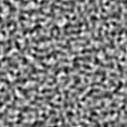
from --verbose blog and IGN
Noise Algorithms
input coordinates → pseudo-random process → noise
- Incremental: generate any part independently.
- Pseudo-random: hard for a human to predict.
- Irreversible: no way to get coordinates from noise value.
Incremental Processes
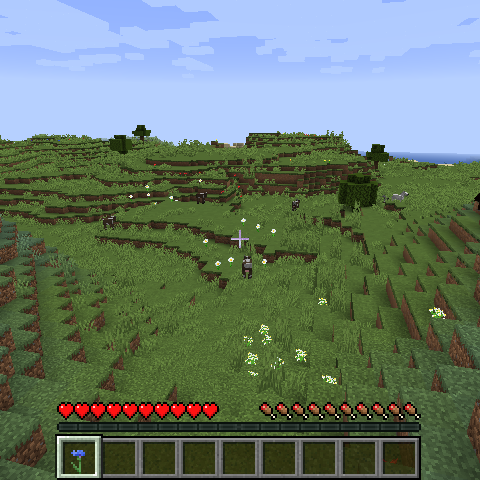
- Provide a huge open world.
- Generate just what the player explores.
- Can mix in set-pieces or outputs from other generators.
- Might not even have to store results…
Caveat: narratives of exploration/exploitation are harmful.
Incremental & Irreversible
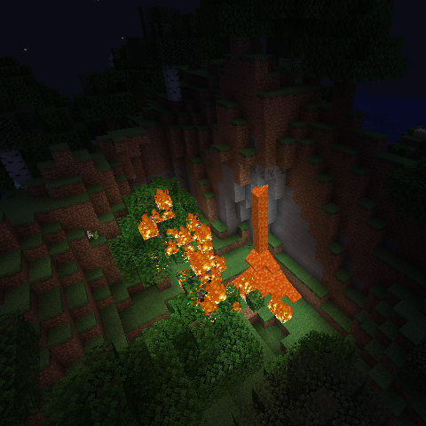
- Lots of cool serendipity.
- Few guarantees of specific situations.
- No good way to detect them.
- E.g., where’s the nearest desert in Minecraft?
- Separate algorithm for key structures.
Shuffling for Guarantees
- Shuffling fixed objects guarantees exact global distribution.
- But shuffling is not incremental.
- We must compute and remember the shuffle up front.
- Shuffles can be tiled, but then distribution must repeat.
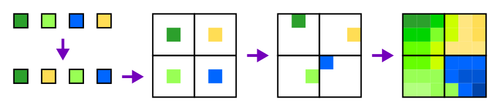
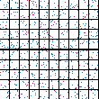
What if… ?
- Can we have an incremental shuffling algorithm?
- Could it be reversible?
Anarchy
Core Features
- Incremental
- Reversible
- Shuffle and distribute items.
- Just random enough to fool humans.
- C, Python, and JavaScript versions.
- 64-bit integer basis (32 in JavaScript).
Reversible PRNG
- Pseudo-random number generators:
- Produce a sequence of unpredictable integers.
- Each seed determines a unique sequence.
- Sequences repeat, but only after a long time.
- Anarchy lets you go backwards in the sequence.
Why go Backwards?
- From known seed, could step forward n - 1 times.
- That’s not always practical in complex code.
- Figuring out can be expensive.
- Lets someone who has a product deduce the seed.
Reversible Shuffling
- Normal shuffle:
- Use ~n time + space (results are stored)
- Use 2n space to also store inverse
- Must compute entire shuffle at once
- Anarchy:
- Incremental: shuffle just the elements you want
- Reversible: also compute pre-shuffle index
Reversible Shuffling
- Technique:
- Combine simple reversible/incremental operations, like circular shift or (perfect) riffle shuffle.
- Set parameters of each operation based on seed.
- Apply reverse operations in reverse order to undo.
- Anarchy has 7 unique operations and applies 15 for each shuffle.
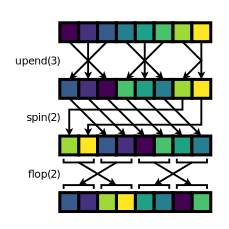
Reversible Shuffling
Reversible Shuffling
- Incremental means we can happily shuffle some portion of millions or billions of elements.
- Reversible means we can figure out where everything went.
- Generation of a world requires world coords → which thing
- Quests can use which thing → world coords
Reversible Distribution
- Shuffling gives an exact global distribution.
- Does not give control over local densities.
- Back to serendipity, but also lack of control.
- We don’t want uniformity, but we want to approach it.
Solution: divide N items among S segments of size C, with α roughness.
Reversible Distribution
- α = 0 → perfectly uniform distribution among segments.
- α = 1 → perfectly random distribution among segments.
- Also specify segment max capacity.
- Still want the process to be incremental and reversible.
Distribution Algorithm
- Compute half of segments and random split point for items.
- Pick first or second part:
- If asking about an item, compare index to item split point.
- If asking about a segment, compare to halfway point.
- Recurse in first or second part with fewer segments
(and probably fewer items).- Stop if there is only one segment.
Distribution Algorithm
- Takes ~ steps, where is the # of segments
- # of items is irrelevant!
- of anything is pretty small.
- Only computes splits needed for segment/item in question.
distribution_prior_sumallows incremental mapping of distributed items to some other incremental space.
Combined Capabilities
- Incremental algorithms play nice together.
- Shuffle items before distributing them, then shuffle distributed items within each segment (all per-item).
- Reversible algorithms also play nice.
- End-to-end reversibility.
Why Use Anarchy?
- Standard approach: Tweak independent percentage chances for the appearance of each item.
- Only vague control over which items actually appear.
- No direct control over combinations.
- Can’t rely on any specific item appearing.
- Psychologically powerful, but irresponsible.
Why Use Anarchy?
- Anarchy approach: Use fixed distribution of what will appear and distribute/shuffle into slots.
- Exact control over what will appear (can still randomize).
- Hierarchical shuffling can help control combinations.
- Can rely on and even locate specific items.
- Players have guarantees about effort vs. reward.
Demo
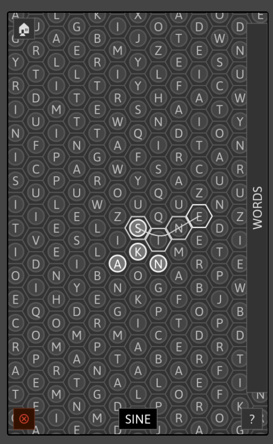 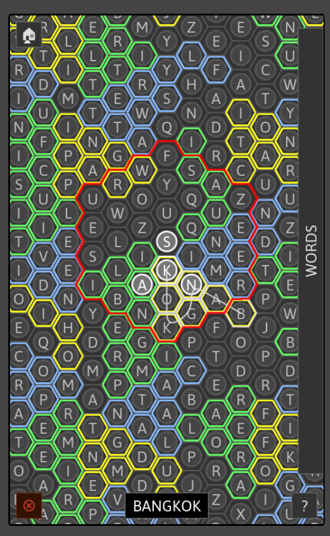
Words Game
- Millions of words distributed on hexagonal grid.
- One word for each edge of a “supertile,” up to 12 letters long.
- Longer words get their own entire supertiles (up to 36 letters).
- Space set aside randomly for other languages.
- Eventually add links between language planes.
- We know where each copy of a word is.
- Eventually add quests for specific words.
Quality
Limitations
- Don’t use for statistics or rigorous simulations.
- E.g., shuffling 100 items, there are ~ orderings.
- But
anarchydetermines order by 64-bit seed ( possibilities).
- But
- Are the
anarchyroutines good enough?
Anarchy vs. Mersenne Twister
- Python’s built-in
randomuses the Mersenne Twister algorithm.- 2.5 KB of state
- Period is .
- Anarchy has 64 bits of state; best-case period is .
- Compare
prngandshuffle.
PRNG
anarchy
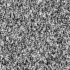 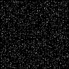
random
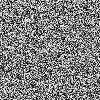 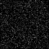
Shuffle
anarchy
![Image with four regions. At the top, 20 rows showing repeated shuffles of the same list, and 20 showing different shuffles of an initial list. At the bottom on the left, a darkish-gray random grayscale region visualizing relative frequencies of how often each input position ends up at each output position. At the bottom on the right, a gray square with a black diagonal and some faintly lighter horizontal and vertical stripes. This represents how often items in a given initial position (by row) end up in front of items from another initial position (by column) and would ideally be perfectly flat gray.](res/rng_shuf_anarchy.png)
random
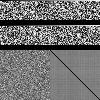
Distribution
![An image with four regions organized vertically. At the top, 20 lines showing different distributions of 50 items across 10 10-item bins. Below that, 7 groups of 5 lines each showing random distributions that get progressively rougher. The first group is all completely even distributions, and the last is very chaotic. Below that, ten rows where each pixel represents a bin and the color is how full it is, appearing generally gray with lighter and darker regions. Finally, another region with the same meaning, but where there are distinct very bright and dark patches (due to higher roughness).](res/rng_dist_anarchy.png)
Bonus Demo
Log-time Incremental Algorithms
- Anarchy’s distribution is a log-time incremental algorithm
- Can guarantee certain properties using recursion
- A good fit for fractal stuff
- Log-time is basically as good as constant-time
- What else can you do with log-time algorithms?